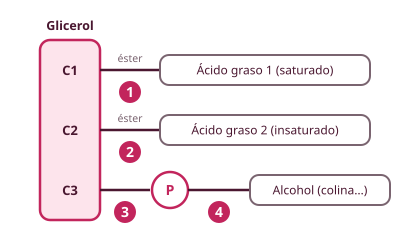

Insolubles en agua y solubles en disolventes orgánicos (benceno, cloroformo); mucho C e H y poco O (algunos con N, P o S). Muchos son anfipáticos.
Se clasifican por la saponificación (hidrólisis alcalina que da jabones): saponificables (tienen ácidos grasos; simples o complejos) e insaponificables (no los tienen).
Cadena hidrocarbonada lineal, normalmente con número par de carbonos, y un grupo carboxilo: cola apolar + cabeza polar → anfipáticos (micelas y bicapas).
Linoleico y linolénico: no podemos fabricarlos. Del linoleico sintetizamos el araquidónico (eicosa = 20 C, tetraen = 4 dobles enlaces, -oico = ácido); del linolénico, EPA y DHA. Araquidónico y EPA son precursores de los eicosanoides.
Glicerol + ácido graso en C1 (suele ser saturado) + ácido graso en C2 (suele ser insaturado, p. ej., araquidónico) + fosfato en C3 unido a un alcohol (etanolamina, colina, serina, inositol, glicerol).

Baja la tensión superficial del líquido alveolar para que los alvéolos no se colapsen al final de la espiración. Su síntesis madura tarde: en los prematuros falta → síndrome de dificultad respiratoria neonatal.
Alcohol esfingosina (18 C) + un ácido graso por enlace amida = ceramida. Abundan en el sistema nervioso. Si falla la enzima que los degrada se acumulan: esfingolipidosis (lesiones en cerebro, hígado y bazo).
| Esfingolípido | Composición | Enfermedad por déficit de su degradación |
|---|---|---|
| Esfingomielina | Ceramida + fosfato + colina (o etanolamina) | Niemann-Pick (esfingomielinasa) |
| Cerebrósido | Ceramida + 1 monosacárido (glucosa o galactosa) | Gaucher (β-glucosidasa) |
| Gangliósido | Ceramida + cadena de azúcares con ácido siálico (NANA); p. ej., GM1 | Tay-Sachs (β-hexosaminidasa) |
NANA = ácido N-acetilneuramínico (en el PDF de origen aparece por error como «muramínico»). En la nomenclatura GM1, G = gangliósido, M = un NANA (mono) y el número indica la secuencia de azúcares.
Los terpenos se forman uniendo unidades de isopreno (5 C). Las vitaminas liposolubles se almacenan y pueden dar hipervitaminosis.
| Vitamina | Funciones | Déficit |
|---|---|---|
| A (retinol, retinal, retinoico) | Diterpeno (20 C). Crecimiento y diferenciación (retinoico), rodopsina y visión en la oscuridad (retinal), antioxidante, inmunidad | Nictalopía, xeroftalmia, infecciones, piel escamosa. Exceso: hepatomegalia, alopecia, dolor articular |
| E (α-tocoferol) | Antioxidante natural más importante (membrana del hematíe, vías respiratorias, retina); espermatogénesis, cicatrización | Anemia del recién nacido, hematíes de vida corta, fatiga muscular, alteraciones reproductivas |
| K (K1 filoquinona, K2 menaquinona) | Cofactor para formar los factores de coagulación II, VII, IX y X y la osteocalcina | Hemorragias |
| D (calciferol) | Metabolismo del calcio y fósforo, junto a la PTH | Raquitismo (niños), osteomalacia (adultos) |
D2 (ergocalciferol) es vegetal. La D3 (colecalciferol) se forma en la piel desde el 7-dehidrocolesterol con luz UV → hígado: OH en C25 = calcidiol → riñón: OH en C1 = calcitriol (1,25-dihidroxicolecalciferol), la forma activa.
Ciclopentanoperhidrofenantreno con un OH, dos metilos y una cadena de 8 C: 27 carbonos. Anfipático (solo el OH es polar), no forma bicapas. Da estabilidad y fluidez a las membranas y es precursor de:
Moléculas de 20 C derivadas de ácidos grasos poliinsaturados como el araquidónico. La prostaglandina sintasa (ciclooxigenasa) inicia la vía de prostaglandinas, prostaciclinas y tromboxanos; la lipooxigenasa, la de los leucotrienos.
| Eicosanoide | Estructura | Acciones |
|---|---|---|
| Prostaglandinas (PGE2…) | Anillo de 5 C | Dolor, fiebre, inflamación; contracción uterina en el parto; muchas son vasodilatadoras e inhiben la agregación plaquetaria |
| Tromboxanos (TXA2) | Anillo de 6 (5 C + O) | Favorecen la agregación plaquetaria y los trombos |
| Leucotrienos | Sin anillo | Células inmunitarias (mastocitos, basófilos, macrófagos): inflamación |
Nomenclatura: PG + letra de la serie (sustituyentes del anillo) + subíndice de la clase (número de dobles enlaces).